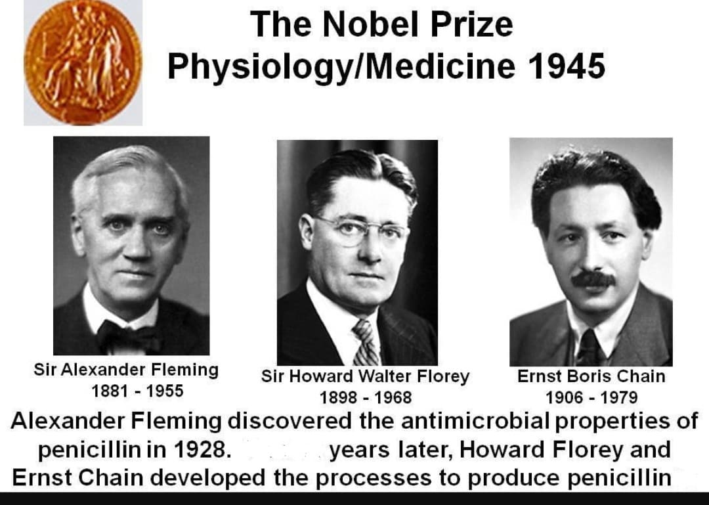
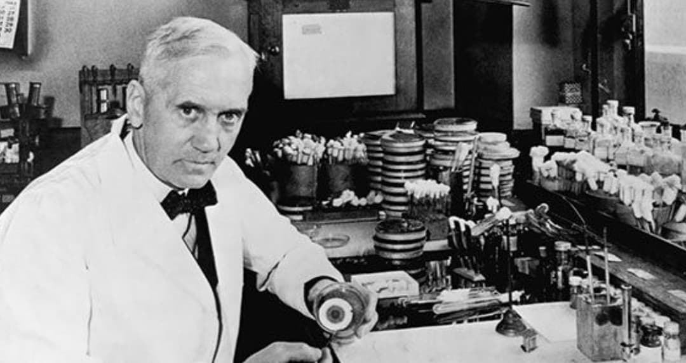
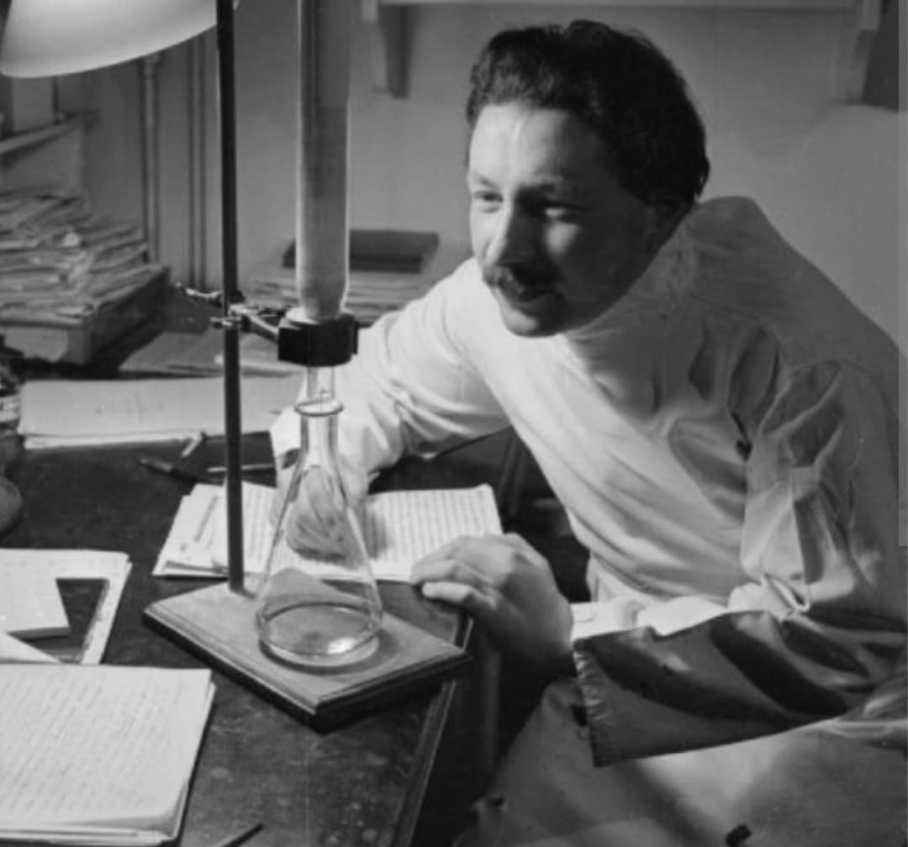
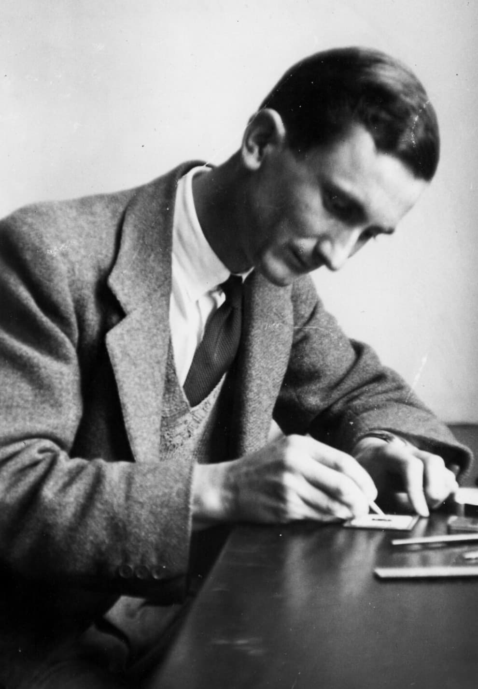
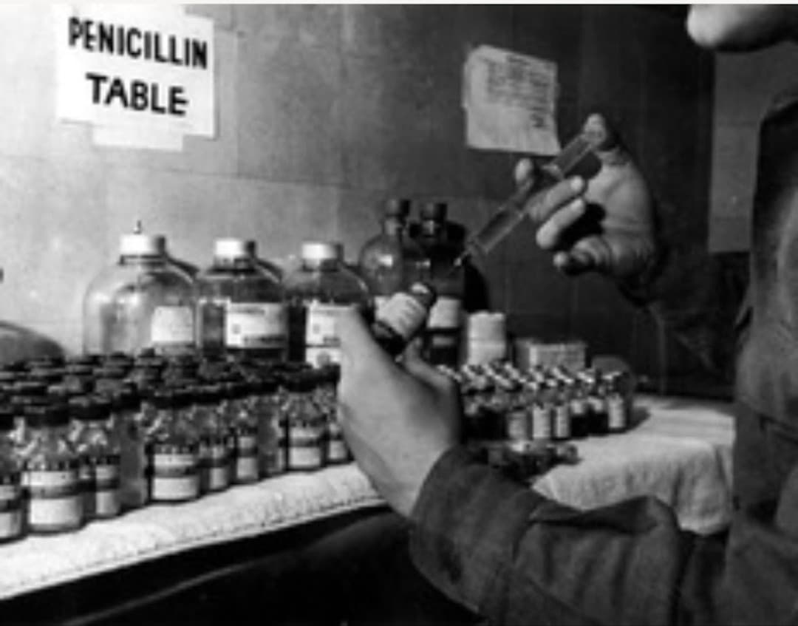
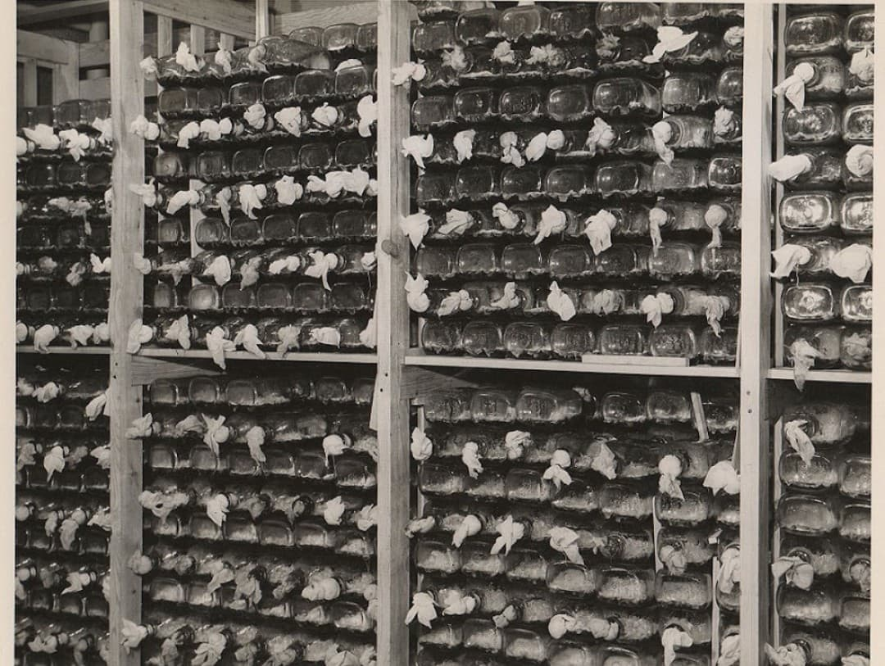
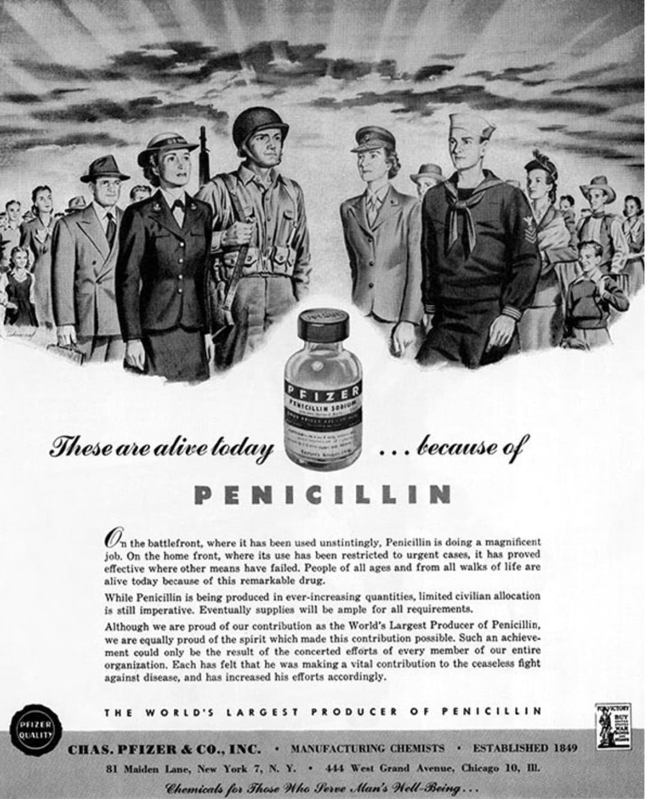

La pénicilline est l’une des découvertes médicales les plus importantes du XXe siècle. Née d’un accident de laboratoire en 1928, elle devient un véritable médicament seulement grâce aux travaux de l’équipe d’Oxford en 1940–1941. Durant la Seconde Guerre mondiale, elle sauve des milliers de soldats alliés en empêchant les infections mortelles. La pénicilline est un tournant médical et militaire.

En 1945, le Prix Nobel de Médecine est attribué à Alexander Fleming, Howard Florey et Ernst Chain pour la découverte et le développement de la pénicilline. Leur travail révolutionne la médecine moderne et sauve des milliers de vies durant la Seconde Guerre mondiale. Norman Heatley, pourtant indispensable à la mise au point du médicament, ne fut pas récompensé.

En 1928, Alexander Fleming observe qu’un champignon, Penicillium notatum, tue les bactéries autour de lui. Il comprend qu’il a trouvé une substance antibactérienne naturelle : la pénicilline. Mais Fleming ne parvient pas à la purifier ni à en faire un médicament utilisable.

Ce sont Howard Florey, Ernst Chain et Norman Heatley qui transforment la découverte de Fleming en un véritable médicament. Ils réussissent à :
Leur travail marque la naissance de l’antibiotique moderne.

▶ Voir la vidéo sur la pénicilline
Les États-Unis développent une méthode révolutionnaire : la fermentation en cuves. À Peoria, un champignon mutant produit 200 fois plus de pénicilline. L’industrie américaine fabrique alors des millions de doses pour les armées alliées.

Avant la pénicilline, une blessure infectée signifiait souvent la mort ou l’amputation. Grâce à l’antibiotique :
La pénicilline devient un atout stratégique majeur pour les Alliés.

La pénicilline est une découverte accidentelle devenue un médicament essentiel grâce à l’équipe d’Oxford. Produite massivement par les États-Unis, elle sauve des milliers de soldats alliés durant la Seconde Guerre mondiale, notamment lors du D‑Day. C’est l’innovation médicale la plus importante de la guerre.
Page du Musée HOP WW2 – Section Mur de Berlin & Guerre froide